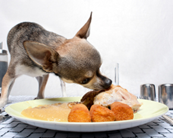

One question I'm asked all the time by dog owners is "can I give my dog 'people food'?" and the answer is always the same: "Yes, but..."
Yes...
Yes, most human foods are absolutely fine for dogs. Some foods, like fresh or lightly cooked vegetables and fruits can be extremely beneficial for dogs; Others, like well cooked brown rice or porridge oats can be really useful for filling up overly hungry dogs without unbalancing the diet; And what dog would ever say no to a nice bit of left over sunday lunch? Additions like these will not only make your dog very happy but they will also help to ensure he gets a broad spectrum of health promoting nutrients.
But...
As with all dog food issues, there is always a but, or in this case several...
Too much of a good thing is never a good thing. Make sure you avoid over-feeding by offsetting any additions with an equivalent reduction of the amount of regular dog food.
Maintain the balance. The key to a healthy diet is balance so if you are adding one food group, say meat, it is best to balance it out with a similar proportion of veg. If you don't mind grains then a three-way meat/veg/grain split also tends to go down well.
Sugar and spice and all things not so nice. Basically, if it's bad for people, it's bad for dogs. Anything that is overly sweet, salty or fatty should be fed sparingly. Gravy, for example, is high in both salt and fat and so should be fed with care. Dogs are also much more sensitive to spices than we are so make sure you keep that left-over vindaloo out of the dog bowl.
Bones. Small, sharp bones like those in chicken and turkey are best avoided as they can get stuck in the throat. Cooked bones also have a tendency to splinter which can make them dangerous.
Different dogs - different problem foods. Many dogs have difficulties with certain foods so bear that in mind when giving tit-bits. For example, if yours is one of the many dogs that can't tolerate wheat, you certainly shouldn't be giving him any bread, pasta, baked goods or any other wheat-based foods.
The big but...
OK OK, I hear you cry, that's all common sense! Quite right, but what you may not know is that certain apparently innocent household foods that are fine for us can actually be very dangerous for our dogs! But don't worry, here's a quick guide to 5 foods that you should never to give your dog:
1. Chocolate
Chocolate for humans can be extremely dangerous for dogs and should always be avoided. It contains a chemical called theobromine which can have enormous detrimental effects on the heart and kidneys of dogs and can, if consumed in large enough quantities, be fatal. Chocolates made specifically for dogs don't contain theobromine and are completely safe.
2. Onions
Onions can cause severe sickness in dogs and large quantities should be avoided. The chemical thiosulphate contained in onions can cause a condition known as haemolytic anaemia where the dog's red blood cells start to burst while circulating the body. Needless to say, this can be very serious and may even be fatal. All forms of onion can be problematic and poisoning can arise equally from a single large dose of onion or with several subsequent meals containing small amounts of onion. Garlic also contains thiosulphate but at much lower levels so small amounts are usually safe.
3. Grapes and raisins
Although we don't fully understand why, grapes and grape products like raisins can cause potentially life-threatenning renal failure in dogs and so should never be fed. That goes for all types of grapes, whether seeded or not.
4. Macadamia nuts
Recent studies have shown that surprisingly small quantities of macadamia nuts (as few as six nuts in some cases) can cause severe mobility issues for dogs. Symptoms include muscle tremors, weakness, muscle pain, swelling of the limbs and paralysis of the hind-quarters. Fortunately, although highly distressing, all of these effects seem to be temporary.
5. Xylitol
Xylitol is widely used as a natural sweetener in many human foods (especially chewing gum and low-calorie sweets and deserts) and while it is fine for us it can be quite dangerous for our dogs. Larger doses can cause low blood sugar and liver failure, both of which can be life-threatening.
If you suspect that your dog has eaten any of these five foods, please consult your vet immediately.
One last but...
So, as you can see, there are plenty of buts, but as long as you use your common sense, dispose of any unsuitable foods securely and, of course, avoid giving the above five foods, there's no reason your dog can't enjoy people food as much as we do.
All About Dog Food assumes no liability for the content of the above list. This does not represent a complete list of all poisonous substances and is only intended as a guide.